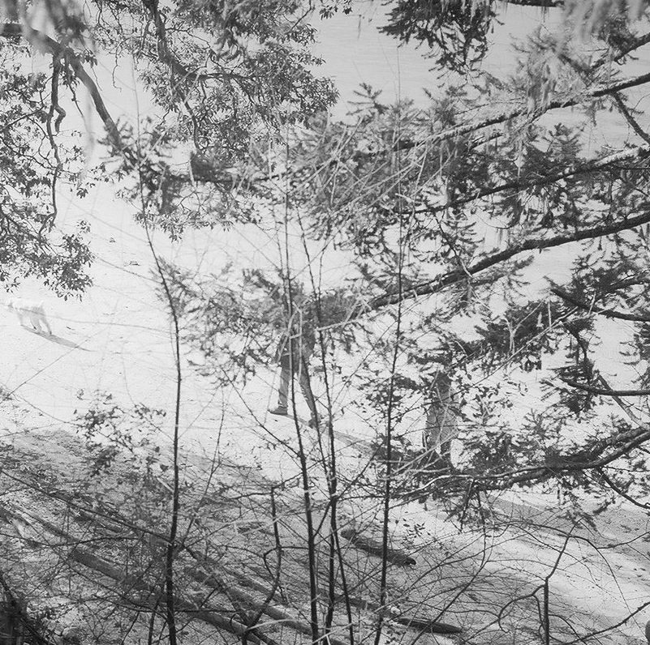

David Leith :: Recent Pieces
NUMTOT
Images by Howard Dai
Composition and performance for Vancouver New Music’s One-Page Score Project with Vancouver Electronic Ensemble.
This sonic interpretation of Howard Dai’s graphic score follows a spiral path.
The Armoury Residuef

Montague Harbour, 2022
Minimalist electronic music by David Leith and Toby Carroll.
The Walk to Work and Back Home Again
Video by Lee Hutzulak
A site-specific soundscape by Lee Hutzulak (Photography/Guitar + FX) & David Leith (Synthesizers/Mix).
The final work was presented in S.P.A.C.E. Banners Project.
Tempographs
A visual experiment of tempography – somewhere between cinema and photography.
Buchla Easel Modular Synth Clone

The Modular Workshop: building the Buchla Easel synthesizer clone.
PoSSeSSiONz

Max/MSP programming for the audio component of PoSSeSSiONz, an interactive video and sound installation presented at the Thru the Trapdoor show @ On Main Gallery.
This code is open sourced here.
Butterfly Swaying
Photos by Marsha Leith
A “performed live” studio version of a piece played at Active / Passive Festival Volume 2.
Bombs Away
Video by Lee Hutzulak
A new Zen Escalator live album/video with special guest Lou Meninski at the Lido.
Find a complete list of work.